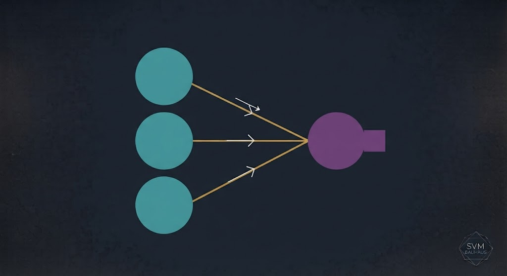
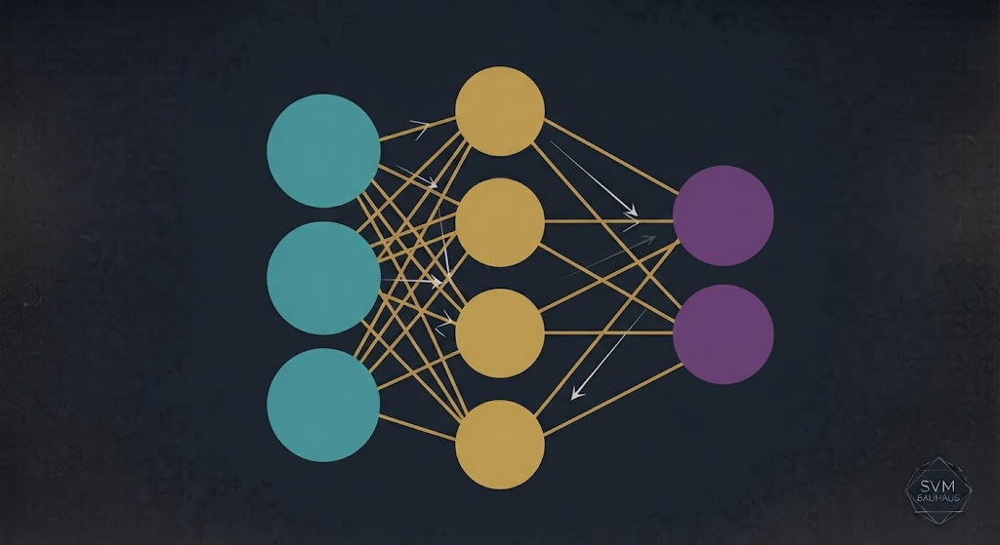
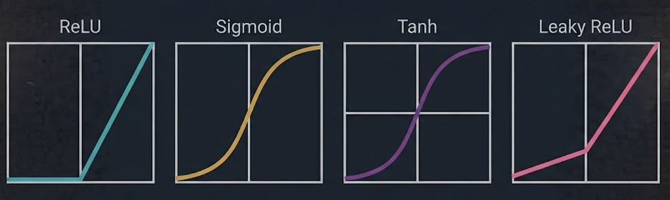
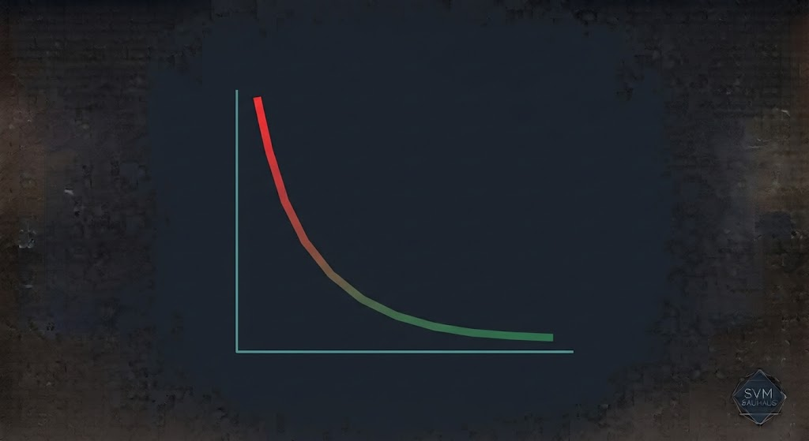
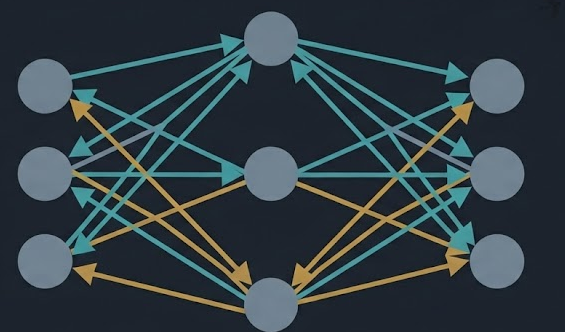
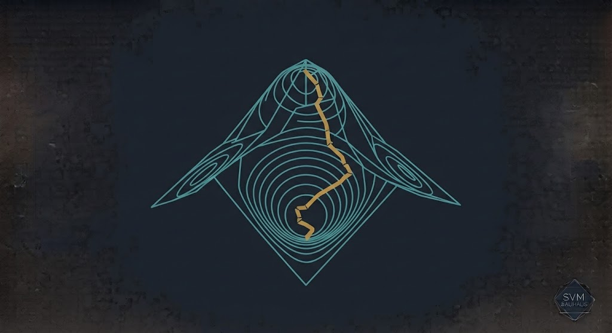
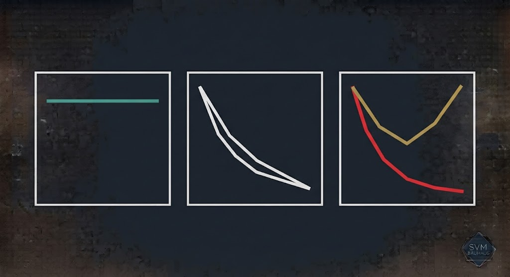
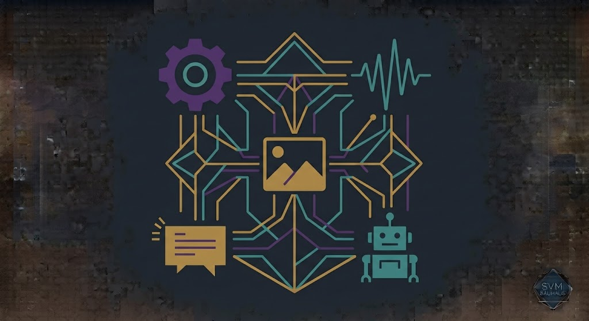

جلسه ۹ — شبکه عصبی و MLP
جلسه ۹ — شبکه عصبی و MLP
جلسه ۹ — شبکه عصبی و MLP
جلسه ۹ — شبکه عصبی و MLP
 ستاره این جلسه
به یاد شهدای والامقام
ستاره این جلسه
به یاد شهدای والامقامIntroduction to Neural Networks · Perceptron · MLP · Backpropagation
From Biological Neurons to Deep Learning
SVM، ارزیابی مدل، ROC
شبکه عصبی، Perceptron، MLP، Backpropagation
✅ نورون بیولوژیکی → نورون مصنوعی
✅ Perceptron و MLP
✅ توابع فعالسازی
✅ Forward Pass و Loss
✅ Backpropagation
✅ Overfitting و Regularization
تا جلسه قبل، مدلهایی مثل Regression، Random Forest، SVM را دیدیم. اینها برای مسائل ساده عالیاند اما در مسائل پیچیده مثل تشخیص چهره، ترجمه زبان، رانندگی خودران — که دادههای حجیم و پیچیده دارند — از یک حد فراتر نمیروند.
شبکه عصبی با الهام از مغز انسان، میتواند الگوهای بسیار پیچیدهای را یاد بگیرد. این پایهای است که تمام یادگیری عمیق (DL) روی آن ساخته شده — از ChatGPT تا تشخیص تومور مغزی.
نورونهای بیولوژیکی → نورونهای مصنوعی
هر لایه، ویژگیهای عمیقتر را استخراج میکند
میلیونها پارامتر قابل تنظیم
CNN، RNN، Transformer — همه روی همین
نورون بیولوژیکی از دندریتها سیگنال میگیرد، در جسم سلولی تجمیع میکند، و اگر از آستانه بگذرد، از آکسون به نورون بعدی میفرستد.

| بیولوژیکی | مصنوعی |
|---|---|
| دندریت | ورودی $x_i$ |
| سیناپس | وزن $w_i$ |
| جسم سلولی | $\sum w_i x_i + b$ |
| آستانه | تابع فعالسازی $f$ |
| آکسون | خروجی $y$ |
سادهترین شبکه عصبی: یک نورون تنها با تابع فعالسازی پلهای (Step Function). در سال ۱۹۵۸ توسط فرانک روزنبلات معرفی شد.

میتواند مسائل خطی (AND, OR, NAND) را حل کند
نمیتواند XOR را حل کند (مسئله خطی جدانشدنی)
وزنها و بایاس را تغییر دهید تا Perceptron مسئله AND را حل کند.
Perceptron تکلایه نمیتواند XOR را حل کند. اما اگر دو لایه داشته باشیم، XOR حل میشود. MLP حداقل یک لایه پنهان بین ورودی و خروجی دارد.

یک MLP با لایه پنهان کافی میتواند هر تابع پیوسته را تقریب بزند
افزایش لایهها = افزایش قدرت، اما ریسک Overfitting
بدون تابع فعالسازی، شبکه فقط یک تبدیل خطی است — هرچقدر هم عمیق باشد. تابع فعالسازی، غیرخطیت اضافه میکند.

| تابع | فرمول | کاربرد |
|---|---|---|
| ReLU | $\max(0, x)$ | لایه پنهان — پیشفرض مدرن |
| Sigmoid | $\frac{1}{1+e^{-x}}$ | طبقهبندی دودویی (خروجی) |
| Tanh | $\frac{e^x - e^{-x}}{e^x + e^{-x}}$ | خروجی بین -۱ و ۱ |
| Softmax | $\frac{e^{x_i}}{\sum e^{x_j}}$ | طبقهبندی چندانتخابی |
تابع را انتخاب کنید و مقدار x را تغییر دهید.
برای پیشبینی، داده از ورودی به خروجی جریان مییابد:
Loss میسنجد خروجی مدل چقدر از جواب واقعی فاصله دارد.

Backpropagation الگوریتمی است که به شبکه میگوید هر وزن چقدر در خطا نقش داشته. این کار با قاعده زنجیرهای (Chain Rule) از حساب دیفرانسیل انجام میشود.

یک شبکه کوچک را روی داده XOR آموزش دهید و پیشرفت را ببینید.

| Optimizer | ویژگی |
|---|---|
| SGD | ساده، کند، نویزی |
| Momentum | شتاب در جهت گرادیان |
| Adam | پیشفرض مدرن — نرخ یادگیری تطبیقی |
| RMSprop | تطبیقی برای RNN |

شبکه خیلی ساده — خطای آموزش بالا
تعادل آموزش و تعمیم
آموزش عالی، تست ضعیف
جریمه وزنهای بزرگ
حذف تصادفی نورونها در آموزش
توقف آموزش قبل از Overfit
داده مصنوعی بیشتر
نرمالسازی بین لایهها

سیگنال ارتعاش → MLP → سالم/خراب
ورودیهای فیزیکی → خروجی دما
حالت سیستم → MLP → فرمان کنترل
ورودیهای طراحی → MLP → خروجی هدف
% XOR با MLP X = [0 0; 0 1; 1 0; 1 1]'; Y = [0 1 1 0]; % شبکه با 2 لایه پنهان net = patternnet([4, 2]); net.trainFcn = 'trainlm'; net.trainParam.epochs = 1000; % آموزش net = train(net, X, Y); % پیشبینی y_pred = net(X); disp(round(y_pred));
import numpy as np from tensorflow.keras.models import Sequential from tensorflow.keras.layers import Dense from tensorflow.keras.optimizers import Adam # داده XOR X = np.array([[0,0], [0,1], [1,0], [1,1]]) y = np.array([0, 1, 1, 0]) # شبکه MLP model = Sequential([ Dense(4, activation='relu', input_shape=(2,)), Dense(2, activation='relu'), Dense(1, activation='sigmoid') ]) model.compile(optimizer=Adam(0.01), loss='binary_crossentropy', metrics=['accuracy']) # آموزش model.fit(X, y, epochs=500, verbose=0) # پیشبینی print(model.predict(X).round())
[AI] HW09 - نام - شماره دانشجویی به arcslab.uth@gmail.com
برای جستوجوی مقالات و مراجع درباره شبکه عصبی.
جستوجوی علمی با ذکر منابع
جلسه ۹ — اصلیتحلیل کد Keras
پشتیبانکدنویسی MLP
پیشنهادیدر Perplexity جستوجو کنید: «Neural network fault diagnosis 2024» و ۳ مقاله معتبر پیدا کنید. منابع را در HW09 بنویسید.
Next Session: CNN & Computer Vision
• Convolutional Neural Networks
• Conv Layers و Pooling
• AlexNet، ResNet
• Transfer Learning
• کاربرد در بینایی ماشین